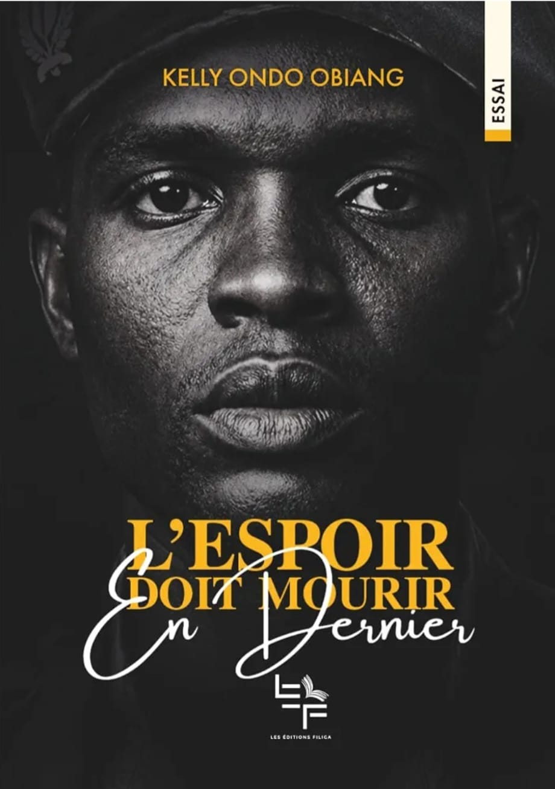

Kelly Ondo Obiang
Ancien officier gabonais · auteur
Un parcours que le Gabon a suivi de près, et une parole qui arrive aujourd'hui sous la forme d'un livre : sans haine, tournée vers l'avenir.
Lire son livre
De l'uniforme à la plume
Kelly Ondo Obiang sert dans les forces armées du Gabon, avec le grade de lieutenant.
Il prend, avec plusieurs militaires, le contrôle de la Maison Georges Rawiri à Libreville et lance un appel à un gouvernement de transition. Le mouvement est rapidement contenu et il est arrêté.
Un tribunal militaire le condamne à 15 ans de prison.
Le régime d'Ali Bongo Ondimba est renversé. Une amnistie générale est ensuite adoptée.
Grâce à la loi d'amnistie adoptée sous la présidence de Brice Clotaire Oligui Nguema, il quitte la prison centrale de Libreville après plus de six ans de détention.
Il publie son premier livre, L'espoir doit mourir en dernier, aux Éditions Filiga.
Offrir une méthode
Dans cet essai, l'auteur affirme ne pas vouloir raconter sa peine, mais offrir une méthode : comment une épreuve peut devenir un point de départ. Il s'adresse en particulier à la jeunesse africaine et rend hommage aux victimes des violences post-électorales de 2016.
« L'espoir doit mourir en dernier. »Commander le livre